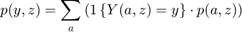
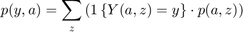
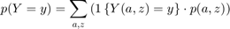
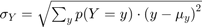
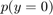
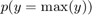
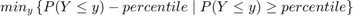
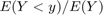
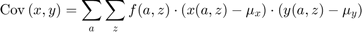
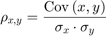

FF_SIMU_STATS Gateway Probability Mass Statistics
Given probability mass function f(s), and information y(s), x(s), z(s) at each element of the state-space, compute statistics for each variable, y, x, z, which are all discrete random variables. And compute their correlation and covariance. The function can take any number of outcome matrixes, y(s), ..., z(s), stored as values of associated with keys that name these variables in a container map.
* MT_F_OF_S matrix or array probability mass at each s point * MP_MT_XYZ_OF_S container map of matrix with MT_X_OF_S * MP_SUPPORT_EXT container map with various control strings with defaults
MP_MT_XYZ_OF_S keys and Example Values:
mp_mt_xyz_of_s = containers.Map('KeyType', 'char', 'ValueType', 'any');
mp_mt_xyz_of_s('ar_st_y_name') = {'cl_mt_pol_a', 'cl_mt_pol_b', 'cl_mt_pol_c'};
mp_mt_xyz_of_s('cl_mt_pol_a') = {mt_pol_a, zeros(1)};
mp_mt_xyz_of_s('cl_mt_pol_b') = {mt_pol_b, zeros(1)};
mp_mt_xyz_of_s('cl_mt_pol_c') = {mt_pol_b, zeros(1)};MP_MT_XYZ_OF_S = FF_SIMU_STATS() default simulation stats outputs.
MP_MT_XYZ_OF_S = FF_DISC_RAND_VAR_MASS2COVCOR(MT_F_OF_S, MP_CL_MT_XYZ_OF_S) calculates various statistics given the provided distribution matrix and various outcome/states matrixes.
MP_MT_XYZ_OF_S = FF_DISC_RAND_VAR_MASS2COVCOR(MT_F_OF_S, MP_CL_MT_XYZ_OF_S, MP_SUPPORT_EXT) provides some additional control strings if to print verbose in each stat function.
See also FX_SIMU_STATS
Contents
- FF_SIMU_STATS post simulation statistics generation
- Default
- Set and Update Support Map
- Parse mp_mt_xyz_of_s
- f(y), f(c), f(a): Generate Key Distributional Statistics for Each outcome
- f(y), f(c), f(a): Find p(outcome(states)), proability mass function for each outcome
- f(y), f(c), f(a): Compute Statistics for outcomes
- f(y), f(c), f(a): Store Statistics Specific to Each Outcome
- Covariance and Correlation
- f(y), f(c), f(a): Store Statistics Shared Table All Outcomes
function mp_cl_mt_xyz_of_s = ff_simu_stats(varargin)
FF_SIMU_STATS post simulation statistics generation
Having derived f(a,z) the probability mass function of the joint discrete random variables, we now obtain distributional statistics. Note that we know f(a,z), and we also know relevant policy functions a'(a,z), c(a,z), or other policy functions. We can simulate any choices that are a function of the random variables (a,z), using f(a,z)
parameter structure provides a list of
- from result_map('ar_st_y_name'), get list of outcome matrix on state space
- simulate each outcome using f(a,z) for probability draws
- compute key statistics: (1) mean (expectation=sum) (2) sd (3) min and max (4) iqr (5) fraction = 0 (6) percentiles including: 99.9, 99, 95, every 5 in between 5, 1, 0.01.
Uses fake binomial data when file is invoke with defaults.
- the first element of each of these cell array is y(a,z), the outcome/choice at the state space points
- the second element of the cell is another container, which contains statistics computed for f(y) based on y(a,z) and f(a,z), f(y) is the probability mass function for outcome y given the stationary distribution f(a,z). The second element container also includes f(y) itself as well as f(y,z).
- additionally, result_map also stores some of the statistics for different variables jointly together. (a) tb_outcomes_meansdperc: where each row is a different outcome of the model, and each table column stores a different statistics of interest. (b) tb_outcomes_fracheld: which measures the fraction of asset held by different people.
Default
use binomial as test case, z maps to binomial win prob, remember binom approximates normal.
if (~isempty(varargin)) if (length(varargin)==2) [mt_f_of_s, mp_cl_mt_xyz_of_s] = varargin{:}; elseif (length(varargin)==3) [mt_f_of_s, mp_cl_mt_xyz_of_s, mp_support_ext] = varargin{:}; end % if invoked from outside overrid fully else it_states = 6; it_shocks = 5; fl_binom_n = it_states-1; ar_binom_p = (1:(it_shocks))./(it_shocks+2); ar_binom_x = (0:1:(it_states-1)) -3; % f(z) ar_binom_p_prob = binopdf(0:(it_shocks-1), it_shocks-1, 0.5); % f(a,z), mass for a, z mt_f_of_s = zeros([it_states, it_shocks]); for it_z=1:it_shocks % f(a|z) f_a_condi_z = binopdf(ar_binom_x - min(ar_binom_x), fl_binom_n, ar_binom_p(it_z)); % f(z) f_z = ar_binom_p_prob(it_z); % f(a,z)=f(a|z)*f(z) mt_f_of_s(:, it_z) = f_a_condi_z*f_z; end % y(a,z), some non-smooth structure rng(123); mt_pol_a = ar_binom_x' - 0.01*ar_binom_x'.^2 + ar_binom_p - 0.5*ar_binom_p.^2 + rand([it_states, it_shocks]); mt_pol_a = round(mt_pol_a*3); rng(456); mt_pol_c = 10 -(mt_pol_a) + 15*(rand([it_states, it_shocks])-0.5); % Generate result_map % two column, the second zero(1) component left for disc rand var of a, % c mp_cl_mt_xyz_of_s = containers.Map('KeyType','char', 'ValueType','any'); mp_cl_mt_xyz_of_s('cl_mt_pol_a') = {mt_pol_a, zeros(1)}; mp_cl_mt_xyz_of_s('cl_mt_pol_c') = {mt_pol_c, zeros(1)}; mp_cl_mt_xyz_of_s('ar_st_y_name') = ["cl_mt_pol_a", "cl_mt_pol_c"]; end
Set and Update Support Map
mp_support = containers.Map('KeyType','char', 'ValueType','any'); mp_support('bl_display_detail') = false; mp_support('bl_display_final') = true; % for ff_disc_rand_var_mass2outcomes.m mp_support('bl_display_drvm2outcomes') = false; % for ff_disc_rand_var_stats.m mp_support('ar_fl_percentiles') = [1 10 25 50 75 90 99]; mp_support('bl_display_drvstats') = false; % for ff_disc_rand_var_stats.m mp_support('bl_display_drvm2covcor') = false; % override default support_map values if (length(varargin)==3) mp_support = [mp_support; mp_support_ext]; end % Parse Support_map params_group = values(mp_support, {'bl_display_detail', 'bl_display_final'}); [bl_display_detail, bl_display_final] = params_group{:}; params_group = values(mp_support, {'bl_display_drvm2outcomes'}); [bl_display_drvm2outcomes] = params_group{:}; params_group = values(mp_support, {'ar_fl_percentiles', 'bl_display_drvstats'}); [ar_fl_percentiles, bl_display_drvstats] = params_group{:}; params_group = values(mp_support, {'bl_display_drvm2covcor'}); [bl_display_drvm2covcor] = params_group{:};
Parse mp_mt_xyz_of_s
result_map
params_group = values(mp_cl_mt_xyz_of_s, {'ar_st_y_name'});
[ar_st_y_name] = params_group{:};
f(y), f(c), f(a): Generate Key Distributional Statistics for Each outcome
for it_y_ctr=1:length(ar_st_y_name)
f(y), f(c), f(a): Find p(outcome(states)), proability mass function for each outcome
Using from tools: ff_disc_rand_var_mass2outcomes, compute unique sorted outcomes for y(a,z) and find:



note: sum(mt_dist_az, 2) = result_map('cl_mt_pol_a'){2}, but not at small simulation grids. These two might be different because pol_a is based on a choices, mt_dist_az is based on a states
st_y_key = ar_st_y_name(it_y_ctr);
cl_mt_xyz_of_s = mp_cl_mt_xyz_of_s(st_y_key);
mt_y_of_s = cl_mt_xyz_of_s{1};
% run function ff_disc_rand_var_mass2outcomes.m
if (size(mt_y_of_s, 2) == 1)
% matrix inputs are single column
[ar_f_of_y, ar_y_unique_sorted] = ...
ff_disc_rand_var_mass2outcomes(st_y_key, mt_y_of_s, mt_f_of_s, bl_display_drvm2outcomes);
else
% matrix inputs are multi-column
[ar_f_of_y, ar_y_unique_sorted, mt_f_of_y_srow, mt_f_of_y_scol] = ...
ff_disc_rand_var_mass2outcomes(st_y_key, mt_y_of_s, mt_f_of_s, bl_display_drvm2outcomes);
end
f(y), f(c), f(a): Compute Statistics for outcomes
- $\mu_Y = E(Y) = \sum_{y} p(Y=y) \cdot y $
- 
- 
- 
- percentiles: 
- fraction of outcome held by up to percentiles: 
% run function ff_disc_rand_var_stats.m from tools: [ds_stats_map] = ff_disc_rand_var_stats(st_y_key, ar_y_unique_sorted', ar_f_of_y', ... ar_fl_percentiles, bl_display_drvstats); % prcess results % retrieve scalar statistics: fl_choice_mean = ds_stats_map('fl_choice_mean'); fl_choice_sd = ds_stats_map('fl_choice_sd'); fl_choice_coefofvar = ds_stats_map('fl_choice_coefofvar'); fl_choice_min = ds_stats_map('fl_choice_min'); fl_choice_max = ds_stats_map('fl_choice_max'); fl_choice_prob_zero = ds_stats_map('fl_choice_prob_zero'); fl_choice_prob_below_zero = ds_stats_map('fl_choice_prob_below_zero'); fl_choice_prob_above_zero = ds_stats_map('fl_choice_prob_above_zero'); fl_choice_prob_min = ds_stats_map('fl_choice_prob_min'); fl_choice_prob_max = ds_stats_map('fl_choice_prob_max'); % retrieve distributional array stats ar_choice_percentiles = ds_stats_map('ar_choice_percentiles'); ar_choice_perc_fracheld = ds_stats_map('ar_choice_perc_fracheld');
f(y), f(c), f(a): Store Statistics Specific to Each Outcome
see intro section
% Append prob mass functions to ds_stats_map if (size(mt_y_of_s, 2) > 1) ds_stats_map('mt_f_of_y_srow') = mt_f_of_y_srow; ds_stats_map('mt_choice_prob_byYA') = mt_f_of_y_scol; end ds_stats_map('ar_y_unique_sorted') = ar_y_unique_sorted; % fl_neg_sum = sum(ar_f_of_y<0); % if (fl_neg_sum >= -1e20) % warning('fl_neg_sum is too large') % end ar_f_of_y(ar_f_of_y<0) = 0; ar_f_of_y = ar_f_of_y/sum(ar_f_of_y); % sum(ar_f_of_y) ds_stats_map('ar_f_of_y') = ar_f_of_y; % ds_stats_map is second element of cell for the key for the variable % in result_map cl_mt_xyz_of_s{2} = ds_stats_map; mp_cl_mt_xyz_of_s(st_y_key) = cl_mt_xyz_of_s; % key stats ar_keystats = [fl_choice_mean fl_choice_sd fl_choice_coefofvar fl_choice_min fl_choice_max ... fl_choice_prob_zero fl_choice_prob_below_zero fl_choice_prob_above_zero ... fl_choice_prob_min fl_choice_prob_max ar_choice_percentiles]; cl_xyz_names(it_y_ctr) = st_y_key; if (it_y_ctr == 1) mt_outcomes_meansdperc = ar_keystats; mt_outcomes_fracheld = ar_choice_perc_fracheld; else mt_outcomes_meansdperc = [mt_outcomes_meansdperc; ar_keystats]; mt_outcomes_fracheld = [mt_outcomes_fracheld; ar_choice_perc_fracheld]; end
end % Store Stats tb_outcomes_meansdperc = array2table(mt_outcomes_meansdperc); ar_fl_percentiles = ds_stats_map('ar_fl_percentiles'); cl_col_names = ['mean', 'sd', 'coefofvar', 'min', 'max', ... 'pYis0', 'pYls0', 'pYgr0', 'pYisMINY', 'pYisMAXY', ... strcat('p', string(ar_fl_percentiles))]; tb_outcomes_meansdperc.Properties.VariableNames = matlab.lang.makeValidName(cl_col_names); tb_outcomes_meansdperc.Properties.RowNames = matlab.lang.makeValidName(cl_xyz_names); if (bl_display_detail) disp('xxx tb_outcomes_meansdperc: mean, sd, percentiles xxx') disp(rows2vars(tb_outcomes_meansdperc)); end % Process Aset Held by up to percentiles tb_outcomes_fracheld = array2table(mt_outcomes_fracheld); cl_col_names = [strcat('fracByP', string(ar_fl_percentiles))]; tb_outcomes_fracheld.Properties.VariableNames = matlab.lang.makeValidName(cl_col_names); tb_outcomes_fracheld.Properties.RowNames = matlab.lang.makeValidName(cl_xyz_names); if (bl_display_detail) disp('xxx tb_outcomes_fracheld: fraction of asset/income/etc held by hh up to this percentile xxx') disp(rows2vars(tb_outcomes_fracheld)); end
Covariance and Correlation
Having computed elsewhere E(X), E(Y), and SD(X), SD(Y), and given X(a,z) and Y(a,z), which are the optimal choices along the endogenous state space grid a, and the exogenous state space grid z, and given also f(a,z), the probability mass function over (a,z), we compute covariance and correlation between outcomes X and Y.
- Covariance

- Correlation

for it_x_ctr=1:length(ar_st_y_name) % Get X Info st_x_key = ar_st_y_name(it_x_ctr); cl_mt_xyz_of_s = mp_cl_mt_xyz_of_s(st_x_key); ds_stats_map = cl_mt_xyz_of_s{2}; cl_mt_xyz_of_s = mp_cl_mt_xyz_of_s(st_x_key); mt_x_of_s = cl_mt_xyz_of_s{1}; fl_x_mean = ds_stats_map('fl_choice_mean'); fl_x_sd = ds_stats_map('fl_choice_sd'); % Initiate storage ar_fl_cov_var_xy = zeros([1,length(ar_st_y_name)*2]); ar_st_covvar = strings([1,length(ar_st_y_name)*2]); for it_y_ctr=1:length(ar_st_y_name) % Get y Info st_y_key = ar_st_y_name(it_y_ctr); cl_mt_xyz_of_s = mp_cl_mt_xyz_of_s(st_y_key); ds_stats_map = cl_mt_xyz_of_s{2}; cl_mt_xyz_of_s = mp_cl_mt_xyz_of_s(st_y_key); mt_y_of_s = cl_mt_xyz_of_s{1}; fl_y_mean = ds_stats_map('fl_choice_mean'); fl_y_sd = ds_stats_map('fl_choice_sd'); % call ff_disc_rand_var_mass2covcor.m [fl_cov_xy, fl_cor_xy] = ff_disc_rand_var_mass2covcor(... mt_x_of_s, mt_y_of_s, mt_f_of_s, ... fl_x_mean, fl_x_sd, ... fl_y_mean, fl_y_sd, bl_display_drvm2covcor); % only include the y name, x name is from the row st_x_y_cov = strjoin(["fl_cov_" st_y_key], ''); st_x_y_cor = strjoin(["fl_cor_" st_y_key], ''); ds_stats_map(st_x_y_cov) = fl_cov_xy; ds_stats_map(st_x_y_cor) = fl_cor_xy; ar_fl_cov_var_xy(it_y_ctr*2-1) = fl_cov_xy; ar_fl_cov_var_xy(it_y_ctr*2) = fl_cor_xy; ar_st_covvar(it_y_ctr*2-1) = string(st_x_y_cov); ar_st_covvar(it_y_ctr*2) = string(st_x_y_cor); cl_mt_xyz_of_s{2} = ds_stats_map; mp_cl_mt_xyz_of_s(st_y_key) = cl_mt_xyz_of_s; end if (it_x_ctr == 1) mt_fl_cov_var_xy = ar_fl_cov_var_xy; else mt_fl_cov_var_xy = [mt_fl_cov_var_xy; ar_fl_cov_var_xy]; end end % Store Stats tb_fl_cov_var_xy = array2table(mt_fl_cov_var_xy); tb_fl_cov_var_xy.Properties.VariableNames = matlab.lang.makeValidName(ar_st_covvar); tb_fl_cov_var_xy.Properties.RowNames = matlab.lang.makeValidName(cl_xyz_names); if (bl_display_detail) disp('xxx tb_outcomes_covvar: variance correlation xxx') disp(rows2vars(tb_fl_cov_var_xy)); end
f(y), f(c), f(a): Store Statistics Shared Table All Outcomes
% Add to result_map mt_outcomes = [mt_outcomes_meansdperc, mt_fl_cov_var_xy, mt_outcomes_fracheld]; mp_cl_mt_xyz_of_s('mt_outcomes') = mt_outcomes; % Store Stats tb_outcomes = [tb_outcomes_meansdperc, tb_fl_cov_var_xy, tb_outcomes_fracheld]; mp_cl_mt_xyz_of_s('tb_outcomes') = tb_outcomes; if (bl_display_final) disp('xxx tb_outcomes: all stats xxx') disp(rows2vars(tb_outcomes)); end
xxx tb_outcomes: all stats xxx
OriginalVariableNames cl_mt_pol_a cl_mt_pol_c
______________________ ___________ ___________
{'mean' } -0.11081 8.8423
{'sd' } 4.1239 6.5845
{'coefofvar' } -37.215 0.74466
{'min' } -7 -6.3772
{'max' } 9 21.786
{'pYis0' } 0.064259 0
{'pYls0' } 0.54867 0.027329
{'pYgr0' } 0.38707 0.97267
{'pYisMINY' } 0.051764 0.015232
{'pYisMAXY' } 0.027329 0.046484
{'p1' } -7 -6.3772
{'p10' } -6 0.27238
{'p25' } -3 5.2138
{'p50' } -1 6.5321
{'p75' } 3 13.799
{'p90' } 5 16.887
{'p99' } 9 21.786
{'fl_cov_cl_mt_pol_a'} 17.007 -22.084
{'fl_cor_cl_mt_pol_a'} 1 -0.81327
{'fl_cov_cl_mt_pol_c'} -22.084 43.356
{'fl_cor_cl_mt_pol_c'} -0.81327 1
{'fracByP1' } 3.2699 -0.010985
{'fracByP10' } 5.9889 -0.013362
{'fracByP25' } 14.165 0.041007
{'fracByP50' } 16.208 0.1893
{'fracByP75' } 12.702 0.59539
{'fracByP90' } 6.6611 0.8307
{'fracByP99' } 1 1
end
ans =
Map with properties:
Count: 5
KeyType: char
ValueType: any